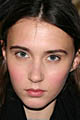
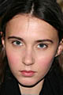

Elise Modeling Agency
Onze andere modellen
Hieronder vind u een selectie van onze andere modellen:
 Jennifer
Jennifer
 Hanne
Hanne
 Anouck
 Jill
Anouck
 Jill
 Rose
Rose
 Hannelore
Hannelore
 Louise
Louise
Elise Crombez

Elise Crombez (24 juli 1982, Moeskroen), is een Belgisch topmodel.
Crombez, opgegroeid in het West-Vlaamse Koksijde, werd in 1999 ontdekt door de wedstrijd Miss Mannequin in Roeselare, die ze samen met een vriendin deed. Ze zat toen nog op de middelbare schoolbanken in het College van Veurne. Ze haalde meer dan tien keer de cover van Vogue, zowel de Engelse als de Italiaanse. Ze werd het gezicht van merken als Prada, Jil Sander, Ralph Lauren en Helmut Lang. In 2003 was ze het gezicht van H&M. Verder liep ze modeshows voor Giorgio Armani, Jean-Paul Gaultier, Calvin Klein en Dior (ontwerper: John Galliano). In 2002 stond ze in de top vijf van de meest gevraagde modellen ter wereld.
Momenteel woont Crombez in New York City, maar ze zegt dat haar hart nog steeds in Koksijde ligt.